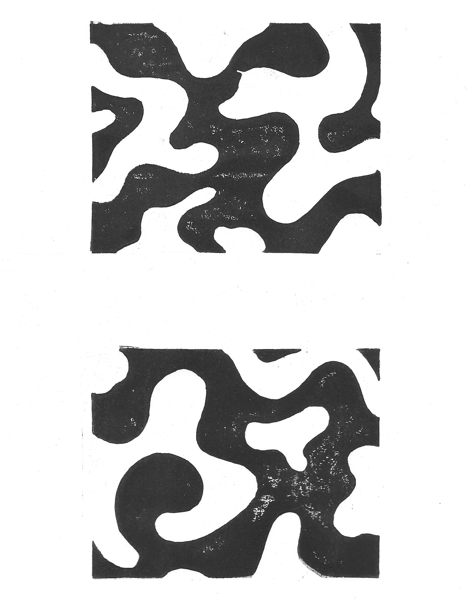
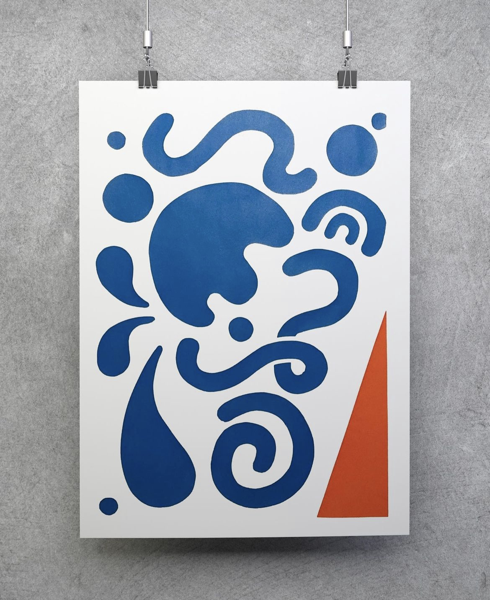
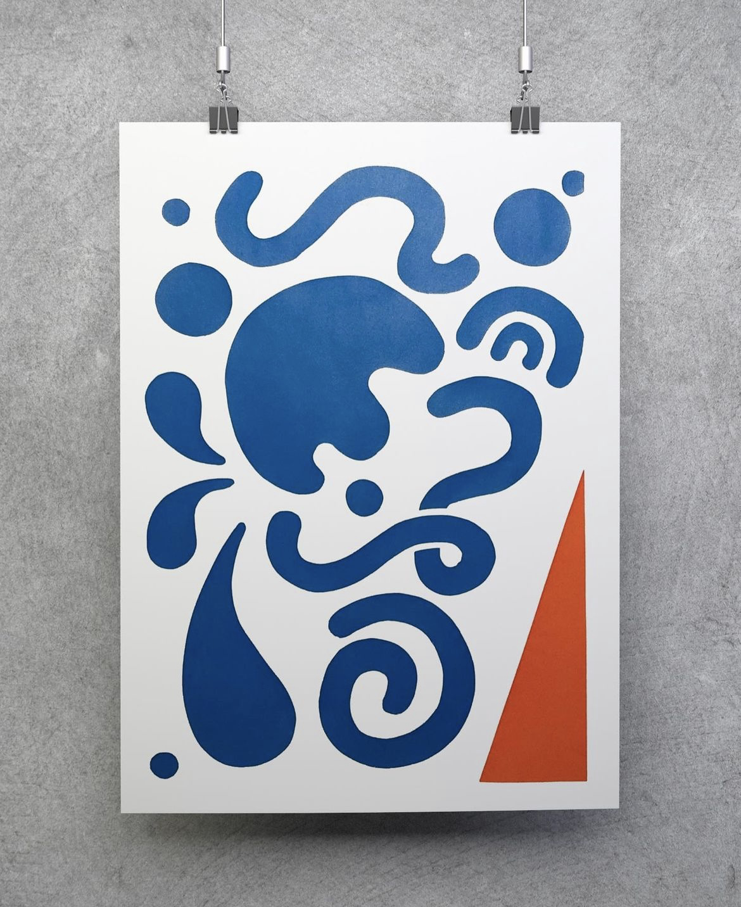
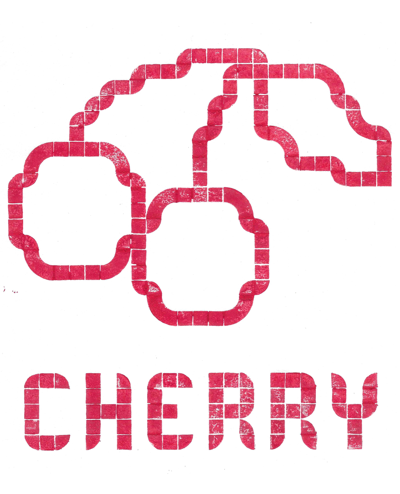
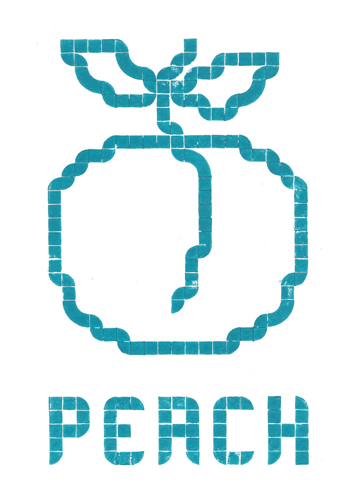
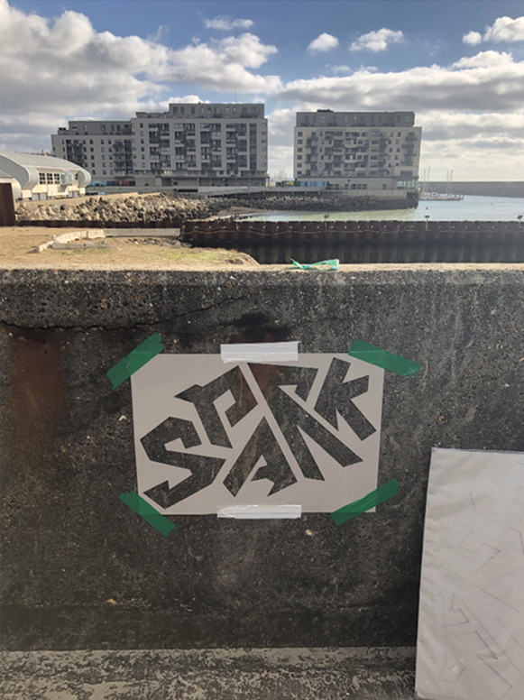
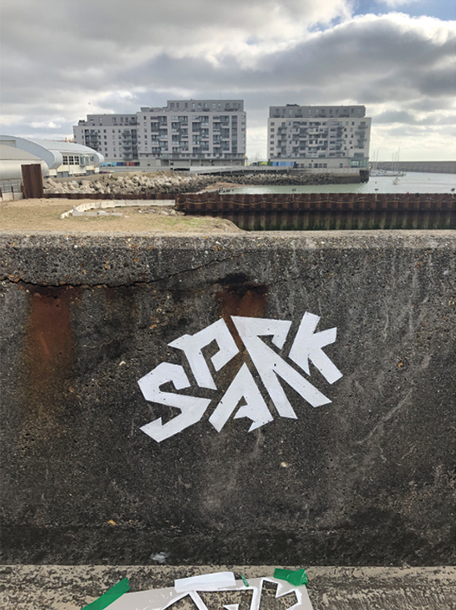

My experience in bookbinding and printmaking enables me to add a unique,
handcrafted element to my work where appropriate. Through these various analogue
techniques, I'm committed to producing creative and polished designs
that will help your brand shine.

My personal favourite scene in the Studio Ghibli film 'Ponyo', where the main character is running across the waves that are also shaped like fish. I wanted to capture the scene's playfullness and movement in a linoprint and did so using two separate pieces; one for the blue of the fish and the sea, and another for the reddish pink of Ponyo's hair and dress.

 

A2 screenprint using 120T screen and acrylic paint mixed with print medium. I chose to use a newsprint template instead of photo emulsion, so that I could use the cutouts for an alternate, reversed print with negatives.

Printed using LEGO Dots and water-based printing ink. I converted images of the fruits into pixel-art digitally before translating that into the shapes LEGO Dots catered for onto a base plate. Ink was then applied on the smooth top of the LEGO pieces and transferred onto cartridge paper.



Japanese Stab Bind - a bookbinding technique that uses individual, double-sided pages instead of leaves. The thread allows for intricate and precisely measured patterns along the spine of the book.


One word poster using natural chalk paint and the wall of Brighton Marina as the canvas. This was in response to the COP26 Conference in 2022, in which myself and the rest of my university cohort intended to invoke thought with the general public and how they should be doing their part around the conference to 'spark' change.